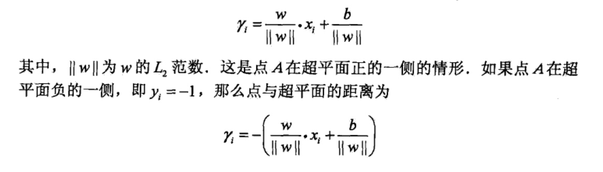
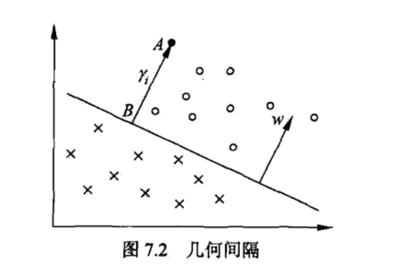
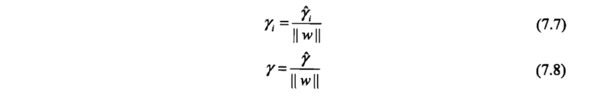
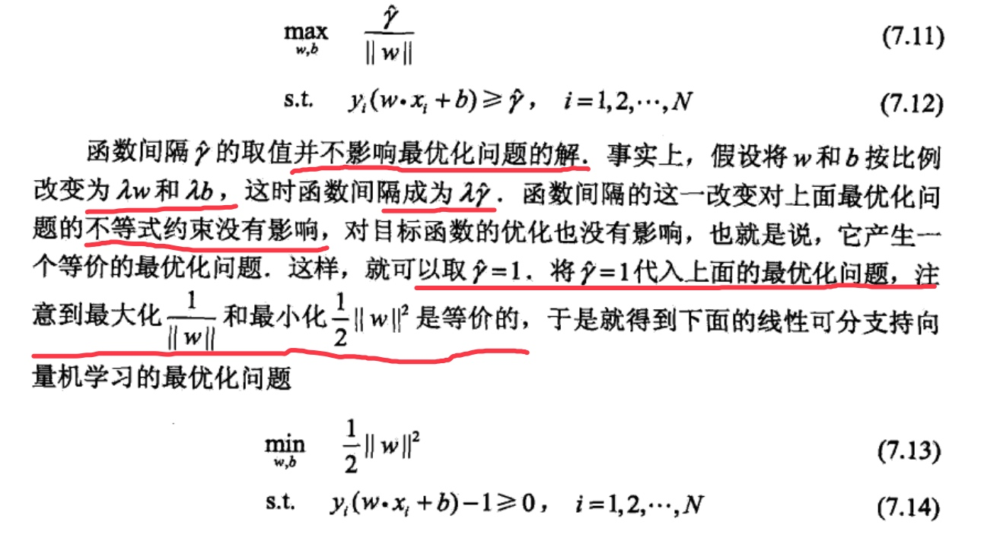
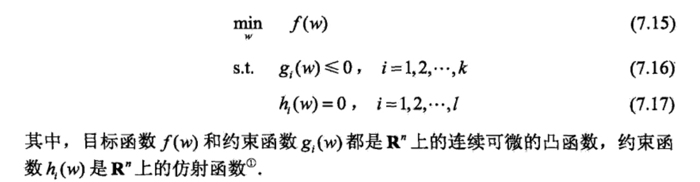
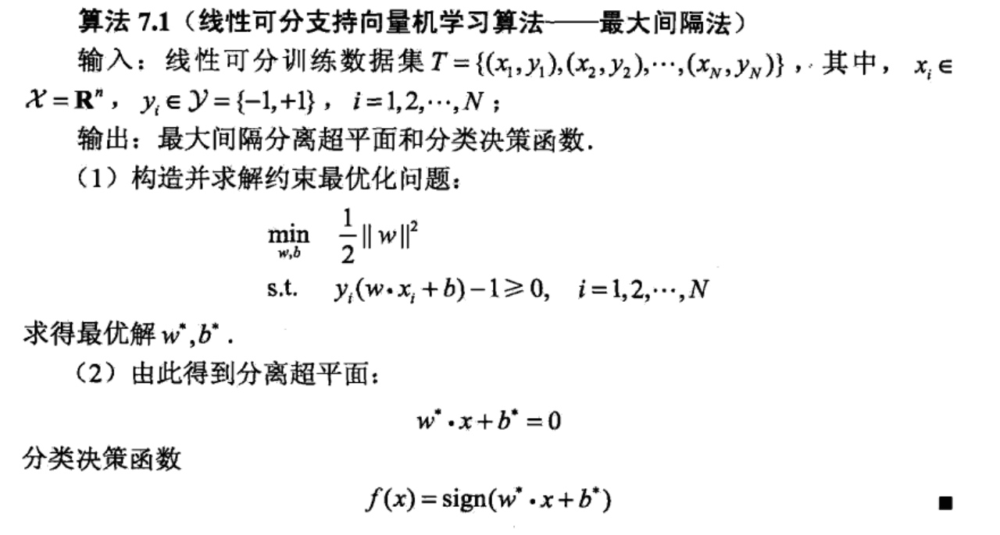
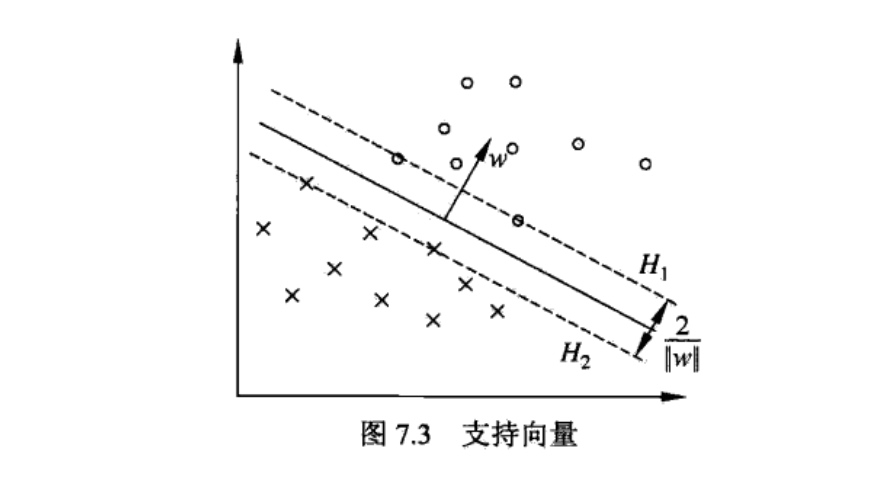
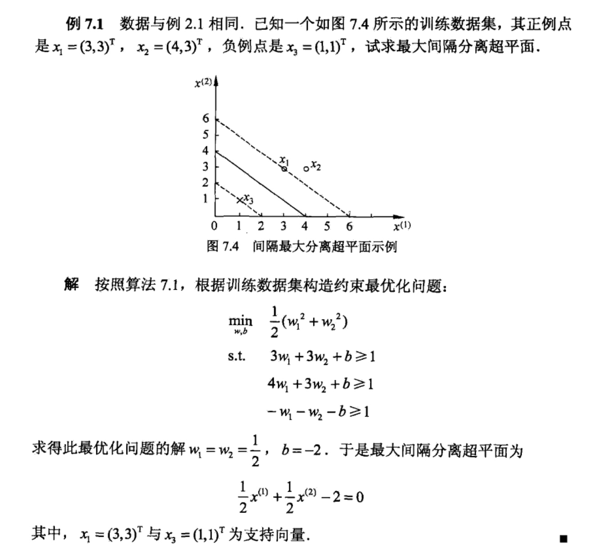

支持向量机（support vector machines，SVM)是一种二类分类模型。它的基本模型是定义在特征空间上的间隔最大的线性分类器，间隔最大使它有别于感知机；支持向量机还包括核技巧，这使它成为实质上的非线性分类器.支持向量机的学习策略就是间隔最大化，可形式化为一个求解凸二次规划（convex quadratic programming)的问题，也等价于正则化的合页损失函数的最小化问题.支持向量机的学习算法是求解凸二次规划的最优化算法.
支持向量机学习方法包含构建由简至繁的模型：线性可分支持向量机（linear support vector machine in linearly separable ease)、线性支持向量机（linear support vector machine)及非线性支持向量机（ncm-linear support vector machine).简单模型是复杂模型的基础，也是复杂模型的特殊情况.当训练数据线性可分时，通过硬间隔最大化（hard margin maximization)，学习一个线性的分类器，即线性可分支持向量机，又称为硬间隔支持向量机；当训练数据近似线性可分时，通过软间隔最大化（soft margin maximization)，也学习一个线性的分类器，即线性支持向量机，又称为软间隔支持向量机；当训练数据线性不可分时，通过使用核技巧 (kernel trick)及软间隔最大化，学习非线性支持向量机.
当输入空间为欧氏空间或离散集合、特征空间为希尔伯特空间时，核函数(kernel fimcticm)表示将输入从输入空间映射到特征空间得到的特征向量之间的内积.通过使用核函数可以学习非线性支持向量机，等价于隐式地在高维的特征空间中学习线性支持向量机.这样的方法称为核技巧.核方法（kernel method)是比支持向量机更为一般的机器学习方法.
Cortes与Vapnik提出线性支持向量机，Boser、Guyon与Vapnik又引入核技巧，提出非线性支持向量机.
本次一次学习3类支持向量机、核函数以及一种跨苏学习方法——序列最小最优化算法(SMO)
线性可支持性良机与硬间隔最大化
线性可支持向量机
考虑一个二类分类问题，假设输入空间与特征空间为两个不同的空间.输入空间为欧氏空间或离散集合，特征空间为欧氏空间或希尔伯特空间.线性可分支持向量机、线性支持向量机假设这两个空间的元素一一对应，并将输入空间中的输入映射为特征空间中的特征向量.非线性支持向量机利用一个从输入空间到特征空间的非线性映射将输入映射为特征向量.所以，输入都由输入空间转换到特征空间，支持向量机的学习是在特征空间进行的.
假设给定一个特征空间上的训练数据集：
\(T={\{x_1,y_1},(x_2,y_2),...(x_N,y_N)\}\)
,其中，\(x_i \in \mathcal{X}=R^n,y_i \in \mathcal{Y}={\{+1,-1}\},i=1,2,...N,x_i\)为第i个特征向量，也成为实例，\(y_i为x_i的类标记，当y_i=+1时，称x_i为正例；当y_i=-1时，称x_i为负例,(x_i,y_i)成为样本点，再假设训练数据集是线性可分的\)
学习的目标是在特征空间中找到一个分离超平面，能将实例分到不同的类，分离超平面对应于方程\(w*x+b=0\),它由法向量w和截距b决定，可用(w,b)来表示.分离超平面将特征空间划分为两部分，一部分是正类，一部分是负类.法向量指向的一侧为正类，另一侧为负类.
一般地，当训练数据集线性可分时，存在无穷个分离超平面可将两类数据正确分开.感知机利用误分类最小的策略，求得分离超平面，不过这时的解有无穷多个,线性可分支持向量机利用间隔最大化求最优分离超平面，这时，解是唯一的.
下面给出线性可支持向量机的定义：

考虑如图7.1所示的二维特征空间中的分类问题.图中“。”表示正例，“x” 表示负例。训练数据集线性可分，这时有许多直线能将两类数据正确划分.线性可分支持向量机对应着将两类数据正确划分并且间隔最大的直线，如图7.1所示.

间隔最大及相应的约束最优化问题将在下面叙述.这里先介绍函数间隔和几何间隔的概念.
函数间隔和几何间隔
在图7.1中，有A,B,C三个点，表示3个实例，均在分离超平面的正类一侧，预测它们的类.点A距分离超平面较远，若预测该点为正类，就比较确信预测是正确的；点C距分离超平面较近，若预测该点为正类就不那么确信；点B介于点A与C之间，预测其为正类的确信度也在A与C之间.
一般来说，一个点距离分离超平面的远近可以表示分类预测的确信程度.在超平面w*x+ b = 0确定的情况下，|w*x+b丨能够相对地表示点x距离超平面的远近.而w*+b的符号与类标记y的符号是否一致能够表示分类是否正确.所以可用量y(w*x+b)来表示分类的正确性及确信度，这就是函数间隔（fimctional margin)的概念.
下面给出函数间隔的定义：

函数间隔可以表示分类预测的正确性及确信度.但是选择分离超平面时，只有函数间隔还不够.因为只要成比例地改变w和例如将它们改为2w和2b,超平面并没有改变，但函数间隔却成为原来的2倍.这一事实启示我们，可以对分离超平面的法向量w加某些约束，如规范化，||w||=1，使得间隔是确定的.这时函数间隔成为几何间隔（geometric margin).
下图给出了超平面（w，b）及其法向量w，点A表示某一实例\(x_i\)，其类标记为\(y_i =+1\)，点A与超平面（w，b）的距离由线段AB给出，记作\(\gamma_i\)。

一般的，当样本点\((x_i,y_i)\)被超平面\((w,b)\)正确分类是，点\(x_i\)与超平面\((w,b)\)的距离是：

所以：由这一事实导出几何间隔的概念。

下面具体给出几何间隔的定义：

从函数间隔和几何间隔的定义（式(7.3)〜式(7.6))可知，函数间隔和几何间隔有下面的关系：

如果||w||=1,那么函数间隔和几何间隔相等.如果超平面参数w和b成比例地改变（超平面没有改变)，函数间隔也按此比例改变，而几何间隔不变.
间隔最大化
支持向量机学习的基本想法是求解能够正确划分训练数据集并且几何间隔最大的分离超平面.对线性可分的训练数据集而言，线性可分分离超平面有无穷多个（等价于感知机)，但是几何间隔最大的分离超平面是唯一的.这里的间隔最大化又称为硬间隔最大化（与将要讨论的训练数据集近似线性可分时的软间隔最大化相对应).
间隔最大化的直观解释是：对训练数据集找到几何间隔最大的超平面意味着以充分大的确信度对训练数据进行分类.也就是说，不仅将正负实例点分开，而且对最难分的实例点（离超平面最近的点）也有足够大的确信度将它们分开.这样的超平面应该对未知的新实例有很好的分类预测能力.
1. 最大间隔分离超平面
下面考虑如何求得一个几何间隔最大的分离超平面，即最大间隔分离超平面.具体地，这个问题可以表示为下面的约束最优化问题：

即我们希望最大化超平面(w,b)关于训练数据集的几何间隔\(\gamma\),约束条件表示的是超平面(w, b)关于每个训练样本点的几何间隔至少是\(\gamma\).
考虑几何间隔和函数间隔的关系式(7.8),可将这个问题改写为:

这是一个凸二次规划（convex quadratic programming)问题，凸优化问题是指约束最优化问题。
凸优化问题是指约束最优化问题：

当目标函数f(w)是二次函数且约束函数\(g_i(w)\)是仿射函数时，上述凸最优化问题成为凸二次规划问题。
仿射函数即由1阶多项式构成的函数，一般形式为 f(x)=Ax+b，这里A是一个 m×k 矩阵，x是一个k向量,b是一个m向量，实际上反映了一种从 k维到m维的空间映射关系。
如果求出了约束最优化问题(7.13)〜(7.14)的解\(w^*,b^*\)，那么就可以得到最大间隔分离超平面\(w^*·x + b = 0\)及分类决策函数\(f(x)=sign(w^*+b^*)\),即线性可分支持向量机模型.
根据上面所得出的结论，就有下面的支持向量机的学习算法————最大间隔法(maximum margin method )

2.最大间隔分离超平面的存在唯一性
线性可分训练数据集的最大间隔分离超平面是存在且唯一的。
定理7.1 (最大间隔分离趄平面的存在唯一性）若训练数据集T线性可分，则可将训练数据集中的样本点完全正确分开的最大间隔分离超平面存在且唯一.
这里关于唯一性的证明不在总结。相关资料可以阅读《统计学习方法》p101.
3.支持向量和间隔边界
在线性可分情况下，训练数据集的样本点中与分离超平面距离最近的样本点的实例称为支持向量（support vector).支持向量是使约束条件式(7.14)等号成立的点，即：

对\(y_i=+1\)的正例点，支持向量在超平面：

对\(y_i=-1\)的负例点，支持向量在超平面：

如下图所示，在\(H_1和H_2上的点就是支持向量\)

注意到\(H_1\)和\(H_2\)平行，并且没有实例点落在它们中间.在\(H_1\)与\(H_2\)之间形成一条长带，分离超平面与它们平行且位于它们中央.长带的宽度，即\(H_1\)与\(H_2\)之间的距离称为间隔（margin).间隔依赖于分离超平面的法向量w，等于\(\frac{2}{||w||}\).
\(H_1\)和\(H_2\)称为间隔边界.
在决定分离超平面时只有支持向量起作用，而其他实例点并不起作用。如果移动支持向量将改变所求的解；但是如果在间隔边界以外移动其他实例点，甚至去掉这些点，则解是不会改变的.由于支持向量在确定分离超平面中起着决定性作用，所以将这种分类模型称为支持向量机.支持向量的个数一般很少，所以支 持向量机由很少的“重要的”训练样本确定.
下面举例说明：
